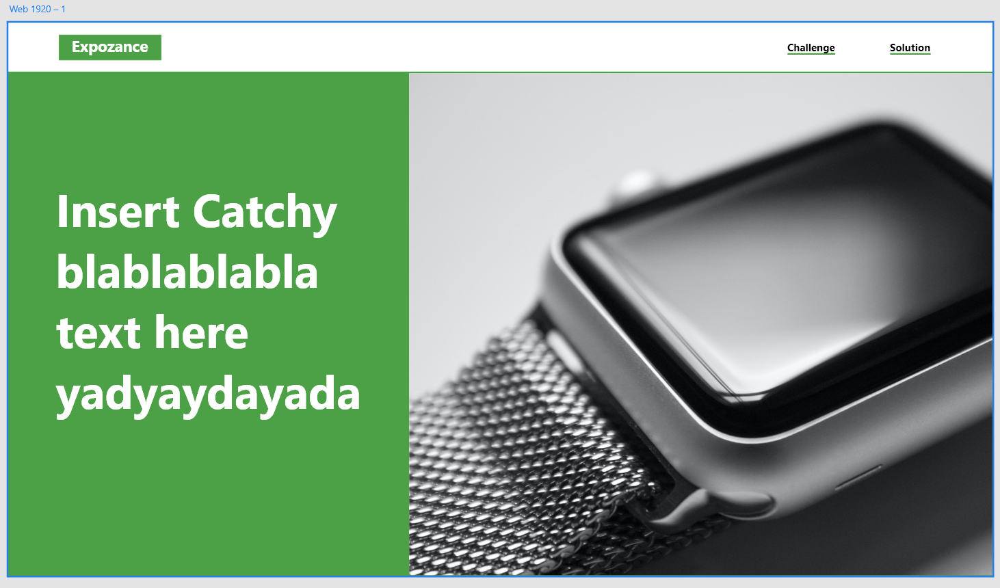
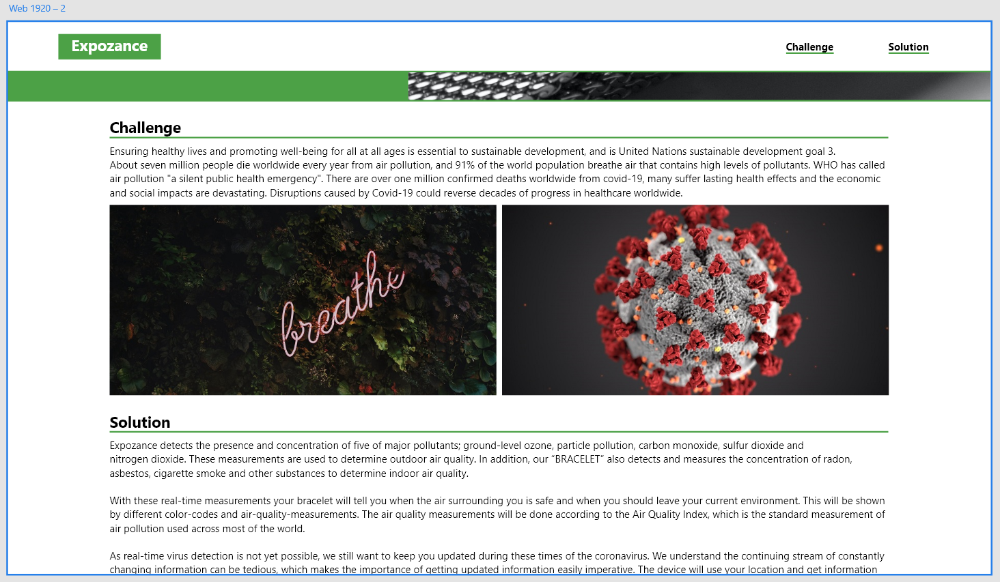
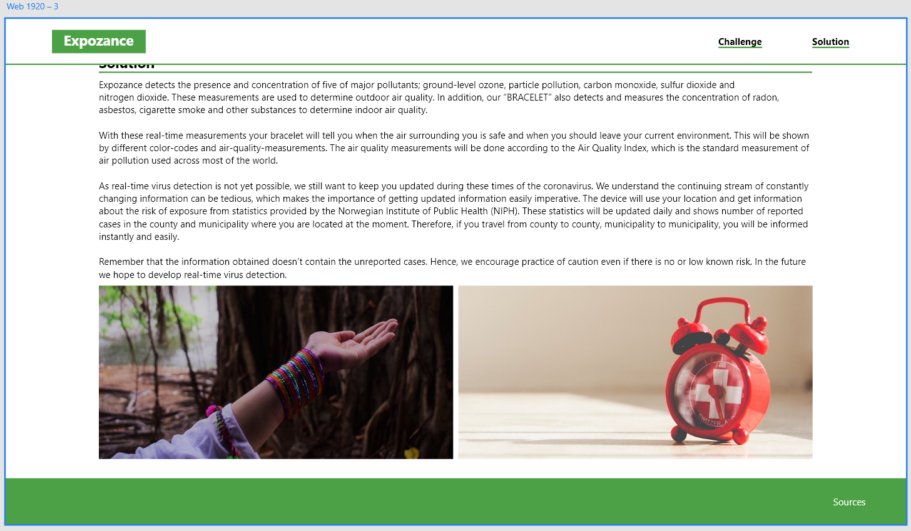
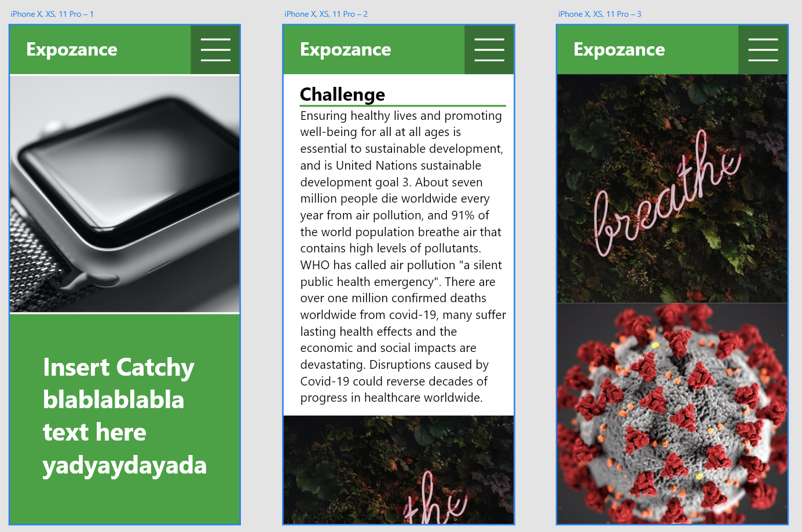

Meeting 6 21.11.20
Group members present:
- Vetle Larsen Gundersen
- Vilde Ytterstad Holmøy
- Mari Ingolfsrud Innvær
Website look decided (Vetle's suggestion):




To do before next meeting:
-
Vilde: Fix the prototype pictures for the solution page (bracelet
functions) and the main pricture on the homepage.
-
Mari: Try to code the design suggestion (pc version).
-
Everyone: Find pictures.
Next meeting: Sunday 22.11.20